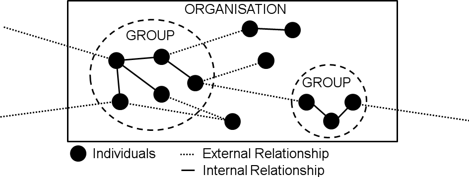
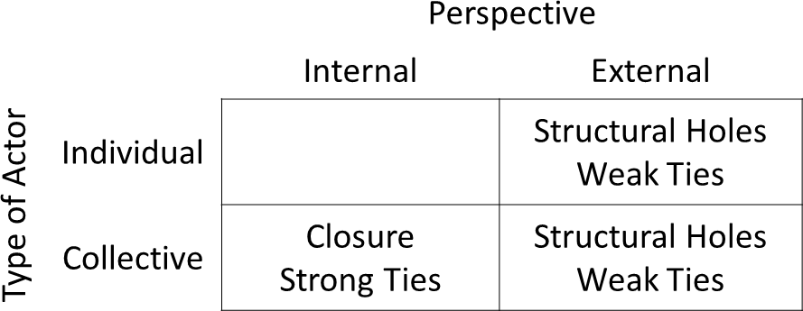
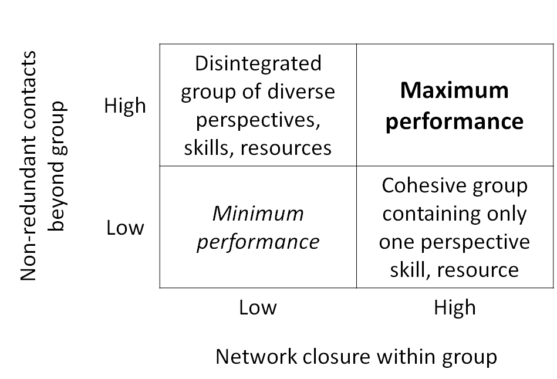

Riemer et al. (2005) and Adler et al. (2002) performed extensive research on Social Capital. It is based on primary works by Granovetter et al. (1973), Coleman et al. (1990) and Burt et al. (2001). This section summarises their research and puts it into the context of Enterprise Social Networks.
The research on Social Capital is diverse and comprised of multiple theories and perspectives (Adler et al., 2002). In general Social Capital describes the value of social relationships in social networks depending on the structure of the network and an actor's position in the network (Riemer et al., 2005). Social Capital is an interdisciplinary topic with research in several domains such as social science, economics and psychology (Riemer et al., 2005).
Baker et al. (1990) defines Social Capital as a "resource that actors derive from specific social structures and then use to pursue their interests". A social structure is comprised of social relationships and how they are embedded into the structure of a social network. The value generated from Social Capital can be used to generate business value (Riemer et al., 2005). It can be utilised to compare actors based on their social relationships as opposed to comparing their skills and attributes. This is useful to assess situations in which a particular actor performs better than other actors, who have an equal set of skills and attributes (Riemer et al., 2005).
Because knowledge work benefits from social relationships, Social Capital is getting more important with the increase of knowledge work (Riemer et al., 2005). Especially virtual teams make strong use of software such as Enterprise Social Networks to maintain social relationships and thus Social Capital (Muller et al., 2012). Within such social networks they can cooperate with other actors and access resources, which would otherwise be unavailable to them.
Actors in a network can be grouped together to form a collective actor (Riemer et al., 2005), which can be found on different levels within a network.
As illustrated in Figure 1 on the lowest level are the individual users. Since individuals are atomar actors, they are not considered collective actors. However the next two levels are the group-level and the organisational-level. Both groups and organisations are collective actors, composed of actors from their respective lower level. Groups are composed of different individual actors and their relationships. Organisations are composed of multiple individuals and groups and their relationships.

Steinfield et al. (2009) state that Social Capital can be conceptualised at different levels. All levels can be analysed by using the same theoretical or methodological approach according to Borgatti et al. (1998). They consider "the substance of Putnam's and Burt's approaches to be separable from the unit of analysis" (p. 28).
Thus the Social Capital of any collective actor can be analysed according to the two different perspectives proposed by Adler et al. (2002): (1) the internal perspective and (2) the external perspective.
The (1) internal perspective of Social Capital is concerned with all structures within a collective actor (Riemer et al., 2005). Typically the internal perspective is used for analysing the social relationships between group members (Adler et al., 2002). Value is generated by cohesion and collaboration within the group (Adler et al., 2002). Collaboration is negatively affected by fragmentation and a long distance to other communication partners (Borgatti et al., 1998). As individuals are not considered collective actors, the internal perspective does not apply to them.
Social Capital based on the (2) external perspective is concerned with all interactions between actors outside of the group (Coleman, 1990; Sandefur, 1998). It emphasises the value of direct and indirect social relationships with others. Tymon et al. (2003) claim that it is beneficial for knowledge work as it enables the generation of new ideas. The exposure to new ideas is further supported by heterogeneous relationships to external actors as mentioned by Borgatti et al. (1998).
Basically, the internal perspective is about interactions, that happen within a collective actor and the external perspective is about interactions, that happen outside of the collective actor. As groups are collective actors, both perspectives are suited to analyse groups in a social network.
When analysing Social Capital it is important to take into account what perspective and level you choose as results may differ (Burt, 2000; Reagans, 2001). Interdependencies may exist \eg if many individuals in a group have high Social Capital, it is reasonable to assume, that the group is densely connected internally and therefore also has high Social Capital. There may be conflicting interdependencies \eg when an individual wants to gain power, it is in the individual's interest to be better connected than others (Blyler et al., 2003).
Based on the two perspectives, two theories are proposed as to what constitutes Social Capital: The (1) "structural holes" theory was originally proposed by Granovetter et al. (1973) and Burt et al. (1992). It is based on "weak ties" and utilises the external perspective. The (2) "closure" theory was originally proposed by Coleman et al. (1988) and Coleman et al. (1990). It is based on "strong ties" and utilises the internal perspective. The connection of the perspectives and the theories is illustrated in Figure 2.

As mentioned before, collective actors can be analysed with both perspectives. Therefore both theories can be applied to collective actors. However, to individual actors only the external perspective and the structural holes theory can be applied.
The structural holes theory is based on the external perspective. It focuses on the ego-network of an actor and his structural position. Two assumptions about the actor are made: (1) an actor has a higher number of diverse, weak ties compared to other actors (Granovetter et al., 1973) and (2) an actor has a central position in the network (Burt et al., 1993).
Weak ties are relationships between actors, which are distant and loose \eg "some person you know". The distance to other actors allows them to provide new impulses and non-redundant information (Adler et al., 2002). Thus an actor with many weak ties can derive value from novel information and ideas.
The structural holes theory describes a central position in the network as a position, which connects parts of a network, that would otherwise be disconnected (Burt et al., 1993). By connecting different parts of a network, information flows through such a position. An actor in a central position can exert control over the flow of information and is called an information broker (Jansen et al., 2002).
As actors derive value from their positions in the network, they try to get into better positions than their peers (Burt et al., 2001). Therefore the structural holes theory is of competitive nature as actors try to gain an advantageous position over others (Burt et al., 2001).
The type of Social Capital, that the structural holes theory describes, is also called Bridging Social Capital (Putnam et al., 2000).
The closure theory is based on the internal perspective. It focuses on the network as a whole and its internal relationships. It is based on the relevance of strong ties and cohesive network structures (Coleman et al., 1988). Strong ties are created by repeated reciprocal interactions between actors (Steinfield et al., 2009). High cohesion stems from strong ties and close knit relationships within the social network or parts of it (Coleman et al., 1988). This results in a high connectivity between all actors within the network. The network itself derives value, if it is closely connected \eg enabling effective collaboration (Riemer et al., 2005). Thus the closure theory is of cooperative nature as the network as whole gains an advantage.
The type of Social Capital, that the closure theory describes, is also called Bonding Social Capital (Putnam et al., 2000).
Although the theories provide contrasting propositions, they are in fact complementary. This is explained by the fact that the two theories are applied to different perspectives of Social Capital. The structural holes theory is applied to the external perspective, while the strong ties theory is applied to the internal perspective.

Initial work on the complementary character of the two theories was performed by Burt et al. (2000). He states, that if combined correctly, the two theories lead to maximum group performance in an organisation. The idea is that a collective actor should try to maximise Bridging and Bonding Social Capital as shown in Figure 3. The bridging Social Capital is maximised based on the structural holes theory: A high number of weak ties are maintained and used as information resources for gathering non-redundant information and ideas. The bonding Social Capital is maximised based on the closure theory: A cohesive group structure is to be facilitated for effective collaboration and cooperation.
After its maximisation of Social Capital, a group can benefit from several effects. These effects are detailed in the next section.
While the general idea of the two theories is outlined above, I discuss some of the positive and negative effects in detail. Riemer et al. (2005), Sandefur et al. (1998) and Adler et al. (2002) split the effects into categories regarding: (1) information, influence and control and (2) collaboration and cooperation (solidarity).
(1) Steinfield et al. (2009) links Social Capital to knowledge management. On the one hand the weak ties make novel information and ideas accessible, on the other hand strong ties are suited to debate complex topics and to engage in prolonged discussions (Riemer et al., 2005). Scott et al. (2012) mentions that information is disseminated more quickly via strong ties than weak ties. According to Hansen et al. (1999) weak ties are easy to maintain and therefore a meaningful resource for information.
Based on the structural holes theory, actors in a brokering position can get a lot of influence (Coleman et al., 1990). They are able to access all the information that passes by them and they can decide which information to pass on or withhold (Burt, 2000; Riemer, 2005). This power benefits individuals, who try to use it for their indivdual career progression (Seibert et al., 2001). However such individual influence is not desired by the network as a whole, because it can negatively affect the organisation's Social Capital.
(2) Strong ties and cohesive network structures build norms, reputation and trust (Adler, 2002; Coleman, 1990) based on the principle of reputation and sanction (Burt, 2000; Coleman, 1990; Riemer, 2005). This enables effective cooperation (Riemer et al., 2005) and the solution of complex problems in an collaborative effort (Krackhardt, 1992 and Riemer, 2005). The norms and trust result in a common ground and shared understanding (Clark et al., 1991), which is required to perform knowledge work according to Nahapiet et al. (1998). Putnam et al. (1995) states that shared norms and trust can lead to societies and subcultures in an organisation, which have positive influence on the organisation's Social Capital. Because users can identify themselves with their respective social network (Watson et al., 2002), they are motivated and show an increased commitment to their organisation (Scott et al., 2012). This motivation is linked by Singh et al. (2011) to Social Capital and project success as strongly tied groups sustain solidarity for working together.
(1) Individuals may exploit their broker position and manipulate information for their own goals (Sandefur et al., 1998). This gives them power over the information flow and can result in a disturbed information flow in the organisation.
(2) The establishment of norms and policies can lead to the creation of exclusive clubs or subcultures, which do not share information to the outside (Portes et al., 1998). Such subcultures can oppose the management direction of an organisation in its views and norms according to the organisation culture theory (Hatch et al., 2012). For new employees it can be difficult to enter such closely knit groups, and individual freedom may be restricted by norms and policies (Jansen et al., 2002).